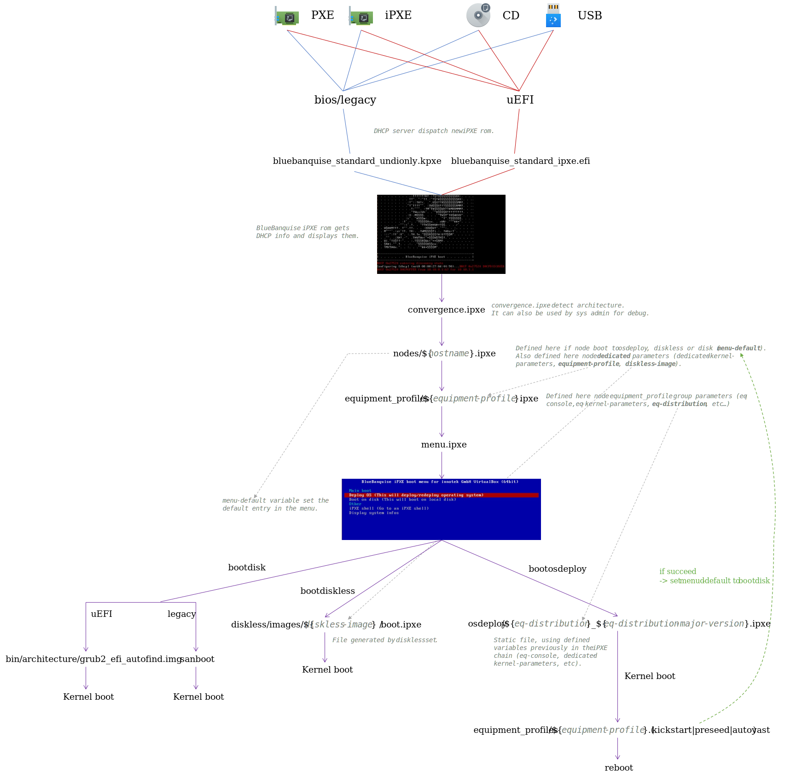

7. Roles¶
This part is an agregations of all the BlueBanquise roles readme.
7.1. CORE¶
7.1.1. Conman¶
7.1.1.1. Description¶
This role provides a conman daemon that logs ipmi serial consols.
Validated on:
Centos 7.6
Ubuntu 18.04
7.1.1.3. Changelog¶
1.0.2: Tested on ubuntu 18.04 and validated. johnnykeats <johnny.keats@outlook.com>
1.0.1: Documentation. johnnykeats <johnny.keats@outlook.com>
1.0.0: Role creation. oxedions <oxedions@gmail.com>
7.1.2. Display_tuning¶
7.1.2.2. Changelog¶
1.0.0: Role creation. oxedions <oxedions@gmail.com>
7.1.3. DHCP server¶
7.1.3.1. Description¶
This role provides a standard and simple dhcp server combined with the iPXE roms of BlueBanquise. It should be enough for most networks.
Please use advanced version if you need advanced features like shared-networks, opt61/82 match, or need to force iPXE roms to be used or use advanced iPXE driver.
7.1.3.2. Instructions¶
This role provides basic features for network relying on MAC only (or range of unknown hosts).
The role will only take into account networks from the current iceberg, and with naming related to administration network (by default iceX-Y). In single iceberg configuration, i.e. default, it will consider ice1-X networks.
For a network to be integrated in the dhcp, the variable is_in_dhcp must be set to true in network related.
Note also that dhcp role will use the following optional parameters if they exist in network:
dhcp_unknown_range: define the range of the subnet, for unregistered hosts. Can be useful for temporary connections (laptops, etc) or to detect if an hardware is missing in the inventory.
gateway: define router in the subnet, and so gateway provided by the dhcp server.
Resulting example network could be:
networks:
ice1-1:
subnet: 10.11.0.0
prefix: 16
netmask: 255.255.0.0
broadcast: 10.11.255.255
dhcp_unknown_range: 10.11.254.1 10.11.254.254 # Is optional
gateway: 10.11.2.1 # Is optional
is_in_dhcp: true # Must be set to true for dhcp role to integrate this network
is_in_dns: true
services_ip:
pxe_ip: 10.11.0.1 # Will be used by dhcp for next server
dns_ip: 10.11.0.1 # Will be used by dhcp for dns server
repository_ip: 10.11.0.1
authentication_ip: 10.11.0.1
time_ip: 10.11.0.1 # Will be used by dhcp for time server
log_ip: 10.11.0.1
Finaly, note that the following parameters can be set in the inventory (group_vars/all/general_settings/network.yml):
default_lease_time
max_lease_time
Consider increasing the default values once your network is production ready.
7.1.3.3. Changelog¶
1.0.3: Simplify standard dhcp, create advanced dhcp for complex configurations. oxedions <oxedions@gmail.com>
1.0.2: Added Ubuntu 18.04 compatibility. johnnykeats <johnny.keats@outlook.com>
1.0.1: Documentation. johnnykeats <johnny.keats@outlook.com>
1.0.0: Role creation. oxedions <oxedions@gmail.com>
7.1.4. DNS server¶
7.1.4.1. Description¶
This role provides a basic dns server based on bind.
7.1.4.2. Instructions¶
This DNS role will automatically add all networks of the cluster, assuming their variable is_in_dns is set to true:
networks:
ice1-1:
subnet: 10.11.0.0
prefix: 16
netmask: 255.255.0.0
broadcast: 10.11.255.255
is_in_dhcp: true
is_in_dns: true <<<<<<<<<<
services_ip:
dns_ip: 10.11.0.1
It will generate 3 files:
/etc/named.conf that contains main configuration, and that will try to bind to all networks defined on the host it is deployed on, using services_ip.dns_ip variable ip of the network.
/var/named/forward that contains forward resolution of hosts
/var/named/reverse that contains reverse resolution of hosts
External hosts defined in group_vars/all/general_settings/external.yml at variable external_hosts will be automatically added in the dns configuration.
To configure forwarding and intergrate this dns server into an existing IT configuration, use file group_vars/all/general_settings/external.yml. It is possible to add here an external dns to bind to for this internal dns, as a relay.
external_dns:
dns_server: <<<<<<<<<<
- 208.67.222.222
7.1.4.3. Changelog¶
1.0.2: Added Ubuntu 18.04 compatibility. johnnykeats <johnny.keats@outlook.com>
1.0.1: Documentation. johnnykeats <johnny.keats@outlook.com>
1.0.0: Role creation. oxedions <oxedions@gmail.com>
7.1.5. DNS client¶
7.1.5.1. Description¶
This role provides a basic /etc/resolv.conf file.
7.1.5.2. Instructions¶
Configuration is made in group_vars/all/general_settings/external.yml.
It is possible to add here external DNS servers for clients:
external_dns:
dns_client: <<<<<<<<<<
- 208.67.220.220
Note that this/these external(s) dns will be placed after the cluster internal dns in resolution order.
7.1.5.3. Changelog¶
1.0.2: Added variable for role version. johnnykeats <johnny.keats@outlook.com>
1.0.1: Documentation. johnnykeats <johnny.keats@outlook.com>
1.0.0: Role creation. oxedions <oxedions@gmail.com>
7.1.6. Hosts file¶
7.1.6.1. Description¶
This role provides a basic /etc/hosts files.
7.1.6.2. Instructions¶
This role will gather all hosts from the inventory, and add them, using all their known internal network connections ip, into /etc/hosts file.
System administrator can reduce the scope of this gathering using hosts_file.range variable in /etc/ansible/inventory/group_vars/all/general_settings/general.yml. Setting range to all will use all Ansible inventory hosts, while setting range to iceberg will reduce the gathering to the current host iceberg.
hosts_file: <<<<<<<<
range: all # can be all (all hosts) or iceberg (iceberg only)
Another feature is available in this hosts role. In case of multiple icebergs, system administrator may need to define a global network, shared by all nodes of a specific group. This is especially needed in HPC for computational nodes to communicates through an interconnect network.
If using such global network, it is possible to ask this role to define direct hosts resolutions of a specific Ansible group to be not on their regular management network, but be set directly on the global network (mostly used in combinaison with slurm and mpi stacks).
To do so, uncomment and edit variable global_network_settings in file /etc/ansible/inventory/group_vars/all/general_settings/network.yml. Note that the role will ignore this variable if it is commented, and will try to use it if not commented.
global_network_settings: <<<<<<<<
global_network: interconnect-1 # Define the global network, must exist in networks files
global_network_group: mg_computes # Define which group of nodes should use global_network direct resolution
Last point, external hosts defined in group_vars/all/general_settings/external.yml at variable external_hosts will be automatically added in the /etc/hosts file.
7.1.6.3. Changelog¶
1.0.3: Accelerated mode. oxedions <oxedions@gmail.com>
1.0.2: Added role version. johnnykeats <johnny.keats@outlook.com>
1.0.1: Documentation. johnnykeats <johnny.keats@outlook.com>
1.0.0: Role creation. oxedions <oxedions@gmail.com>
7.1.7. Log server¶
7.1.7.1. Description¶
This role provides an rsyslog server to gather logs of all hosts.
7.1.7.2. Instructions¶
All logs are separated by systemd instances into /var/log/rsyslog/ .
7.1.7.3. Changelog¶
1.0.1: Fixed bad template. Documentation. johnnykeats <johnny.keats@outlook.com>
1.0.0: Role creation. oxedions <oxedions@gmail.com>
7.1.8. Log client¶
7.1.8.1. Description¶
This role provides an rsyslog client, to be used in combinaison with the log_server role.
7.1.8.2. Instructions¶
NA
7.1.8.3. To be done¶
Integrate journalctl logging instead of rsyslog.
7.1.8.4. Changelog¶
1.0.1: Fixed bad template. Documentation. johnnykeats <johnny.keats@outlook.com>
1.0.0: Role creation. oxedions <oxedions@gmail.com>
7.1.9. NFS server¶
7.1.9.1. Description¶
This role provides an automatic nfs server that export on good networks desired directories.
7.1.9.2. Instructions¶
All configuration is done in group_vars/all/general_settings/nfs.yml:
nfs:
softwares: # Internal name of the nfs share
mount: /opt/softwares # What path server should export
export: /opt/softwares # Which path clients should mount this NFS (will be automatically created by client role)
server: arngrim # The server that export this storage space
clients_groups: # Group of hosts that will mount it. Can be an equipment group, or a main group (mg), or any other ansible group
- mg_computes
- mg_logins
take_over_network: ice1-1 # Network used to share this storage space
export_arguments: ro,no_root_squash,async # Arguments for the server (export)
mount_arguments: ro,intr,nfsvers=4.2,bg # Arguments for the client (mount)
This role will not modify default nfs server configuration (number of threads, nfs v4.2 force, etc).
Do not forget to restart nfs server service when you update configuration for changes to take effect.
7.1.9.3. Changelog¶
1.0.2: Added Ubuntu 18.04 compatibility. johnnykeats <johnny.keats@outlook.com>
1.0.1: Fixed bad template. Documentation. johnnykeats <johnny.keats@outlook.com>
1.0.0: Role creation. oxedions <oxedions@gmail.com>
7.1.10. NFS client¶
7.1.10.1. Description¶
This role provides an automatic nfs client that mount targets and create local directories if needed.
7.1.10.2. Instructions¶
All configuration is done in group_vars/all/general_settings/nfs.yml.
See the nfs_server role isntructions for more details.
Simply note that path that should be mounted will be automatically created by this role if they do not exist.
7.1.10.3. Changelog¶
1.0.2: Added Ubuntu 18.04 compatibility. johnnykeats <johnny.keats@outlook.com>
1.0.1: Fixed bad template. Documentation. johnnykeats <johnny.keats@outlook.com>
1.0.0: Role creation. oxedions <oxedions@gmail.com>
7.1.11. NIC - Network Interface Controler¶
7.1.11.1. Description¶
This role configure network interfaces to provide desired ip, prefix, gateway, etc.
This role is still under work, as nmcli is not supported in RHEL 8 for now, and that this role need to handle much more features.
7.1.11.2. Instructions¶
NA
7.1.11.3. To be done¶
Add more features, as nmcli Ansible module can do much more.
VLANs
LACP/Bond
Non network linked NIC
Multi IP
7.1.11.4. Changelog¶
1.0.2: Adding Ubuntu 18.04 compatibility. johnnykeats <johnny.keats@outlook.com>
1.0.1: Documentation. johnnykeats <johnny.keats@outlook.com>
1.0.0: Role creation. oxedions <oxedions@gmail.com>
7.1.12. PXE Stack¶
7.1.12.1. Description¶
This role provides the whole PXE stack. It is a key feature of the stack (and we are prood of it :-D).
7.1.12.2. Instructions¶
This role will deploy all the needed files, binaries, and scripts to deploy remote hosts using PXE (or even USB and CD boot).
The role take place just after the dhcp in the PXE deployment, and will configure all the iPXE chain needed after dhcp provided hosts with next-server ip and filename to use.
7.1.12.2.1. Files location¶
PXE boot files are located in /var/www/html/preboot_execution_environment/. * bin/ directory contains some needed bin files, typically grub2 files for EFI boot. * equipment_profiles/ directory contains equipment_profiles related files, i.e. ipxe file with group variables, and os configuration files (kickstart, preseed, autoyast). * nodes/ directory contains hosts dedicated files, i.e. ipxe file with hosts dedicated variables. * osdeploy/ directory contains static files, with paterns to boot each kind of supported distributions.
Basic configuration files are located in /etc/bluebanquise/pxe/. * nodes_parameters.yml contains all nodes PXE needed parameters. * pxe_parameters.yml contains needed values for scripts to adapt to current pxe server host (these parameters do not apply to PXE booted hosts !!).
Scripts are located in /usr/bin/.
7.1.12.2.2. Inventory configuration¶
This role will rely on multiple parts of the inventory, and is probably the most “invasive” role of the whole stack.
equipment_profile dictionarries are used for each equipment_profile group. All boot confiuration is made relying on it (operating system, cpu architecture, console, kernel parameters, etc.). It is recommanded to ensure coherency of the equipment_profile files.
authentication dictionarry is used to provide root password and default ssh authorized key.
hosts network_interfaces dedicated variables, to be able to force static ip at kernel boot.
7.1.12.2.3. bootset usage¶
Once the role is deployed, and hosts gathered into /etc/bluebanquise/pxe/nodes_parameters.yml, the bootset tool can be used to manipulate remote hosts PXE boot. By default, 3 states can be defined for each host:
osdeploy: the remote host will deploy/redeploy its operating system, using inventory equipment_profile parameters of its equipment profile group.
disk: the remote host will boot on disk. This parameter is automatically set after a sucessful osdeploy.
diskless: the remote host will boot using a diskless mechanism. This diskless boot is generic, and is handled by an optional external role.
Again, consider that if you set an host to osdeploy, and that it suceed its deployment, stack will automatically set the host into disk boot for next boot, to avoid infinite reinstallation loop.
To get bootset help, use:
bootset -h
To ask an host to deploy/redeploy its operating system, use:
bootset -n c001 -b osdeploy
With c001 the target host to be redeployed.
To set this host to boot on disk, use:
bootset -n c001 -b disk
It is also possible to work on a range of host, using nodeset formating:
bootset -n c001,c002,c[010-020],login1 -b disk
If some inventory parameters related to the host have been updated recently, it may be required to force files regeneration instead of simply modifying them. To do so, use:
bootset -n c001 -b osdeploy -f update
Also, on some “difficult” networks, system administrator may require to force static ip at boot. This can be achieved using:
bootset -n c001 -b osdeploy -f network
Or in combinaison with update, using comma separated:
bootset -n c001 -b osdeploy -f update,network
The tool is relatively verbose, and should provide all needed information on the fly on what it is doing.
Last part, regarding diskless. An image name need to be provided:
bootset -n c001 -b diskless -i myimage
This part should be covered in a diskless related role, and is not in the scope of this role.
7.1.12.2.4. iPXE chain¶
PXE part of the BlueBanquise stack relies heavily on iPXE, and its chain mechanism. This chain has multiple purposes:
Most important, it is verbose, and can be manually manipulated or followed (watching http server logs).
It is flexible, and can adapt to nearly any configuration (disk boot, os deployment, diskless, …).
It can operate on all hardware, from server to laptop. It can even be started from USB or CD image for non PXE able systems.
Some steps may seems weird or unnecessary, but are here on purpose: verbosity and debug, as PXE part is always the trickiest.
Some vocabulary: in the following document, chain* or **chaining refers to the iPXE mechanism that download and execute a new file, after the current one.
Also, all files root is assumed /var/www/html/preboot_execution_environnement on the next-server (the server on which this pxe_stack role has been deployed).
The whole process can be resumed in one detailed schema:
To be macroscopic:
The remote host boot over PXE, in EFI/legacy-bios, using its own PXE/iPXE rom.
The dhcp deployed by BlueBanquise will provide the host with the BlueBanquise iPXE rom. This iPXE rom contains an EMBED script that will display the logo, get an ip from the dhcp server, show some information, and chain to file convergence.ipxe.
convergence.ipxe will simply get the current architecture. This operation cannot be done into the EMBED script has it needs some logic, that could bug. Sys admin need to easily debug this whithout the need to rebuild iPXE roms. Then iPXE chain to nodes/${hostname}.ipxe with hostname the hostname provided by the dhcp server.
nodes/${hostname}.ipxe will define all host dedicated parameters, and also what host should do: boot on disk, deploy os, or boot in diskless. Then iPXE chain to equipment_profiles/${equipment-profile}.ipxe, with equipment-profile a variable defined in the current file.
equipment_profiles/${equipment-profile}.ipxe contains the host equipment profile group parameters, like operating system, console, kernel parameters, etc. Then iPXE chain to menu.ipxe.
menu.ipxe will display a basic menu on screen, with default set to what node is expected to do (this was gathered in nodes/${hostname}.ipxe). Timeout is 10s by default before host execute the expected action. Then, iPXE chain to:
osdeploy/${eq-distribution}_${eq-distribution-major-version}.ipxe if host needs to deploy/redeploy its operating system. These osdeploy files are dynamic, and adapt to parameters gathered in host dedicated file and host equipment_profile file.
diskless/images/${diskless-image}/boot.ipxe if host needs to boot in diskless.
sanboot –no-describe –drive 0x80 if host is legacy/bios/pcbios based. This is a simple command that boot on disk.
bin/${arch}/grub2_efi_autofind.img if host is EFI based. This grub2 image will look for a disk with a know operating system, and boot on it.
In case of an OS deployment, if this deployment succeed, in the post install script section, remote host will ask, using a curl command on its side and an CGI python script on server side (/var/www/cgi-bin/bootswitch.cgi), to boot next to disk. This CGI python script will simply edit node/${hostname}.ipxe file and change its default boot to bootdisk.
All files are manually editable. Also, note that an unregistered host (so no hostnames provided by the dhcp) will try to load nodes/.ipxe file. By default, this file will simply provide an iPXE shell, but system administrator can tune this file to specific purposes.
To follow the deployment process, simply tail -f logs of http server, and see the whole process occuring.
7.1.12.3. To be done¶
Issue when deploying ubuntu 18.04. Very long hang after packages check. Install continue after like 10 minutes of hang. Not blocking but boring…
7.1.12.4. Changelog¶
1.0.2: Add Ubuntu 18.04 compatibility. johnnykeats <johnny.keats@outlook.com>
1.0.1: Documentation. johnnykeats <johnny.keats@outlook.com>
1.0.0: Role creation. oxedions <oxedions@gmail.com>
7.1.13. Repositories server¶
7.1.13.1. Description¶
This role simply configure repositories server (only install and start web server).
7.1.13.2. Instructions¶
This role simply install an http server. Repositories files manupulations have to be done manually by system administrator.
Note that repositories structure follows a specific pattern:
Distribution Version Architecture Repository
+ + + +
| +---+ | |
+-----------+ | | +--------+
| | | |
v v v v
/var/www/html/repositories/centos/7.6/x86_64/os
System administrator should create these directories manually, and put packages inside.
Then, repositories that will be setup on clients are stored by default in /etc/ansible/inventory/group_vars/all/general_settings/repositories.yml.
Keep in mind that it is possible to precedence this file in equipment_profiles groupes, and so put a repository file in for example /etc/ansible/inventory/group_vars/equipment_supermicro_sandy_compute that will be considered by these nodes over the default one. This can be useful to define diferent repositories for diferent equipments.
7.1.13.3. Changelog¶
1.0.2: Regrouped all distribs into a main file. johnnykeats <johnny.keats@outlook.com>
1.0.1: Documentation. johnnykeats <johnny.keats@outlook.com>
1.0.0: Role creation. oxedions <oxedions@gmail.com>
7.1.14. Repositories client¶
7.1.14.1. Description¶
This role simply configure repositories for client hosts.
7.1.14.2. Instructions¶
See repositries_server role instructions for more details.
7.1.14.3. To be done¶
Need to clear up the Ubuntu repositories process, still not clear how to handle own made repos and officials repos as Ubuntu add local repos everywhere in the sources.list file.
7.1.14.4. Changelog¶
1.0.2: Added Ubuntu 18.04 compatibility. johnnykeats <johnny.keats@outlook.com>
1.0.1: Documentation. johnnykeats <johnny.keats@outlook.com>
1.0.0: Role creation. oxedions <oxedions@gmail.com>
7.1.15. Set Hostname¶
7.1.15.1. Description¶
This role simply set a node hostname.
7.1.15.2. Instructions¶
NA.
7.1.15.3. Changelog¶
1.0.1: Documentation. johnnykeats <johnny.keats@outlook.com>
1.0.0: Role creation. oxedions <oxedions@gmail.com>
7.1.16. SSH master¶
7.1.16.1. Description¶
This role configure the ssh access of know hosts to make this access through nodes main network.
7.1.16.2. Instructions¶
This role will generate a Configuration file in /root/.ssh/config.
This file will contains all hosts of the Ansible inventory (or all hosts of the current iceberg if using icebergs mode), with the following parameters:
Host freya
StrictHostKeyChecking no
UserKnownHostsFile=/dev/null
Hostname %h-ice1-1
This ensure no issues when redeploying an hosts.
Also, note that for this example host, freya, the target hostname for ssh is %h-ice1-1, which means freya-ice1-1. This can be seen when invoking ssh with verbosity:
[root@odin ]# ssh freya -vvv
OpenSSH_7.8p1, OpenSSL 1.1.1 FIPS 11 Sep 2018
debug1: Reading configuration data /root/.ssh/config
debug1: /root/.ssh/config line 10: Applying options for freya
debug1: Reading configuration data /etc/ssh/ssh_config
debug3: /etc/ssh/ssh_config line 52: Including file /etc/ssh/ssh_config.d/05-redhat.conf depth 0
debug1: Reading configuration data /etc/ssh/ssh_config.d/05-redhat.conf
debug3: /etc/ssh/ssh_config.d/05-redhat.conf line 2: Including file /etc/crypto-policies/back-ends/openssh.config depth 1
debug1: Reading configuration data /etc/crypto-policies/back-ends/openssh.config
debug3: gss kex names ok: [gss-gex-sha1-,gss-group14-sha1-]
debug3: kex names ok: [curve25519-sha256@libssh.org,ecdh-sha2-nistp256,ecdh-sha2-nistp384,ecdh-sha2-nistp521,diffie-hellman-group-exchange-sha256,diffie-hellman-group14-sha256,diffie-hellman-group16-sha512,diffie-hellman-group18-sha512,diffie-hellman-group-exchange-sha1,diffie-hellman-group14-sha1]
debug1: /etc/ssh/ssh_config.d/05-redhat.conf line 8: Applying options for *
debug2: resolving "freya-ice1-1" port 22
debug2: ssh_connect_direct
debug1: Connecting to freya-ice1-1 [10.11.2.1] port 22.
You can see here ssh is not trying to reach freya but is using freya-ice-1-1. This has been made to ensure whatever the direct resolution is in /etc/hosts file or DNS, ssh and so Ansible will always use the management network of the target host.
Note that this file generation is kind of “sensible”, and will surely be the first one to break in case of uncoherent inventory. If this happens, check your inventory, fix it, and remove manually /root/.ssh/config and relaunch its generation.
7.1.16.3. To be done¶
Add ProxyJump for icebergs
7.1.16.4. Changelog¶
1.0.1: Documentation. johnnykeats <johnny.keats@outlook.com>
1.0.0: Role creation. oxedions <oxedions@gmail.com>
7.1.17. SSH slave¶
7.1.17.1. Description¶
This role configure the ssh client authorized public key.
7.1.17.2. Instructions¶
This role will ensure remote hosts is having currently defined ssh authorized public keys in their /root/.ssh/authorized_keys file.
These keys are set in file /etc/ansible/inventory/group_vars/all/all_equipments/authentication.yml.
Keep in mind that this file can be precedenced with equipment_profiles groups or iceberg groups.
7.1.17.3. Changelog¶
1.0.1: Documentation. johnnykeats <johnny.keats@outlook.com>
1.0.0: Role creation. oxedions <oxedions@gmail.com>
7.1.18. Time server¶
7.1.18.1. Description¶
This role provides a time server/client based on Chrony.
7.1.18.2. Instructions¶
This role will react diffrently if in multi icebergs mode or not.
By default, in non multiple icebergs, server will be the time source reference. If using multiple icebergs hierarchy, then server can be a time reference if at top of the icebergs hierarchy, or simply a time relay with an higher stratum, if not a top server. This stratum calculation is done using iceberg_level variable defined in /etc/ansible/inventory/cluster/icebergs/icebergX files.
It is possible to use file /etc/ansible/inventory/group_vars/all/general_settings/external.yml to connect client or server to external time sources (server or pool or servers):
external_time: <<<<<<<<
time_server:
server: # List of possible time servers
- 0.fr.pool.ntp.org
pool: # List of possible time pools
- pool.ntp.org
time_client:
server:
pool:
If set to time_server, server/pool will be added in the server configuration. Of set to time_client, these will be added in client configuration. It is possible for example to not install a time server and simply bind to an external server/pool using this file.
In case of a need, to force time synchronisation on client side, use:
chronyc -a makestep
7.1.18.3. To be done¶
Icebergs with stratums levels.
7.1.18.4. Changelog¶
1.0.1: Documentation. johnnykeats <johnny.keats@outlook.com>
1.0.0: Role creation. oxedions <oxedions@gmail.com>
7.2. ADVANCED CORE¶
7.2.1. Advanced DHCP server¶
7.2.1.1. Description¶
This role provides an advanced dhcp server combined with the iPXE roms of BlueBanquise. Features like shared_network, opt82, opt61 or snp/snponly roms are provided here for very specific configurations or needs.
7.2.1.2. Instructions¶
Dhcp will only take into account networks from the current iceberg, and with naming related to administration network (by default iceX-Y).
Also, ensure dhcp is set to true for your network.
It is possible to combine networks into shared-networks when multiple subnets are on the same NIC. To do so, add a variable in the network definition.
For example to add ice1-1 and ice1-2 into the same shared network, define them this way:
Ice1-1:
networks:
ice1-1:
subnet: 10.10.0.0
prefix: 16
shared_network: wolf
...
And ice1-2:
networks:
ice1-2:
subnet: 10.30.0.0
prefix: 16
shared_network: wolf
...
shared_network variable is optional and is simply ignored if not set.
7.2.1.3. Changelog¶
1.0.2: Added Ubuntu 18.04 compatibility. johnnykeats <johnny.keats@outlook.com>
1.0.1: Documentation. johnnykeats <johnny.keats@outlook.com>
1.0.0: Role creation. oxedions <oxedions@gmail.com>
7.3. ADDONS¶
7.3.1. ClusterShell¶
7.3.1.1. Description¶
This role provides clustershell and groups for clustershell (based on Ansible groups).
7.3.1.3. To be done¶
Tree execution mode is missing.
7.3.1.4. Changelog¶
1.0.1: Fixed bad template. Documentation. johnnykeats <johnny.keats@outlook.com>
1.0.0: Role creation. oxedions <oxedions@gmail.com>
7.3.2. OpenLDAP client¶
7.3.2.1. Description¶
This role provides a basic but UNSECURE ldap client based on SSSD.
7.3.2.2. Instructions¶
NA
7.3.2.3. To be done¶
Enable encryption to secure this role.
7.3.2.4. Changelog¶
1.0.1: Fixed bad template. Documentation. johnnykeats <johnny.keats@outlook.com>
1.0.0: Role creation. oxedions <oxedions@gmail.com>
7.3.3. OpenLDAP server¶
7.3.3.1. Description¶
This role provides a basic but UNSECURE ldap server. It also provides phpldapadmin configuration to manage LDAP.
7.3.3.2. Instructions¶
Login into http://localhost/phpldapadmin to manage LDAP.
Keep in mind this role is for the time being unsecure.
7.3.3.3. To be done¶
Enable encryption to secure this role.
7.3.3.4. Changelog¶
1.0.1: Fixed bad template. Documentation. johnnykeats <johnny.keats@outlook.com>
1.0.0: Role creation. oxedions <oxedions@gmail.com>
7.3.4. Prometheus server¶
7.3.4.1. Description¶
This role deploy prometheus server with alertmanager.
7.3.4.2. Instructions¶
Prometheus is available at http://localhost:9090
Alertmanager is available at http://localhost:9093
Node_exporter is available at http://localhost:9100
7.3.4.3. To be done¶
Allow groups alerts selection.
7.3.4.4. Changelog¶
1.0.1: Documentation. johnnykeats <johnny.keats@outlook.com>
1.0.0: Role creation. oxedions <oxedions@gmail.com>
7.3.5. Prometheus client¶
7.3.5.1. Description¶
This role deploy node_exporter for Prometheus queries.
7.3.5.2. Instructions¶
Node_exporter is available at http://localhost:9100
7.3.5.3. To be done¶
Allow groups alerts selection.
7.3.5.4. Changelog¶
1.0.0: Documentation. johnnykeats <johnny.keats@outlook.com>
1.0.0: Role creation. johnnykeats <johnny.keats@outlook.com>
7.3.6. Report¶
7.3.6.1. Description¶
This role try to provide sys admin few useful tools.
An automatic known issue paterns checker for the stack
Many visual reports (inventory, playbooks, network, facts)
7.3.6.2. Instructions¶
Report is available at http://localhost/report/index.html
7.3.6.3. To be done¶
Many things…
7.3.6.4. Changelog¶
1.0.1: Documentation. johnnykeats <johnny.keats@outlook.com>
1.0.0: Role creation. oxedions <oxedions@gmail.com>
7.3.7. Slurm¶
7.3.7.1. Description¶
This role provides slurm configuration for server, client and login nodes.
7.3.7.2. Instructions¶
To use this role for all 3 types of nodes, simply add a vars in the playbook when loading the role. Extra vers is slurm_profile.
For a controler (server), use:
- role: HPC_slurm
tags: HPC_slurm
vars:
slurm_profile: controler
For a compute node (client), use:
- role: HPC_slurm
tags: HPC_slurm
vars:
slurm_profile: node
And for a login (passive client), use:
- role: HPC_slurm
tags: HPC_slurm
vars:
slurm_profile: passive
7.3.7.3. To be done¶
slurmdbd + mariadb
static file
7.3.7.4. Changelog¶
1.0.1: Documentation. oxedions <oxedions@gmail.com>
1.0.0: Role creation. oxedions <oxedions@gmail.com>
7.3.8. Users basic¶
7.3.8.1. Description¶
This role provides a very basic users management, for simple clusters.
7.3.8.2. Instructions¶
Copy addon/users_basic.yml into /etc/ansible/inventory/group_vars/all/addons folder.
Then edit this file according to your needs, and play this role on all hosts with users.
To generate an sha512 password, use the following command (python >3.3):
python -c 'import crypt,getpass; print(crypt.crypt(getpass.getpass(), crypt.mksalt(crypt.METHOD_SHA512)))'
Or (python 2):
python -c "import crypt,random,string; print crypt.crypt(raw_input('clear-text password: '), '\$6\$' + ''.join([random.choice(string.ascii_letters + string.digits) for _ in range(16)]))"
7.3.8.3. Changelog¶
1.0.1: Documentation and ressources. johnnykeats <johnny.keats@outlook.com>
1.0.0: Role creation. oxedions <oxedions@gmail.com>